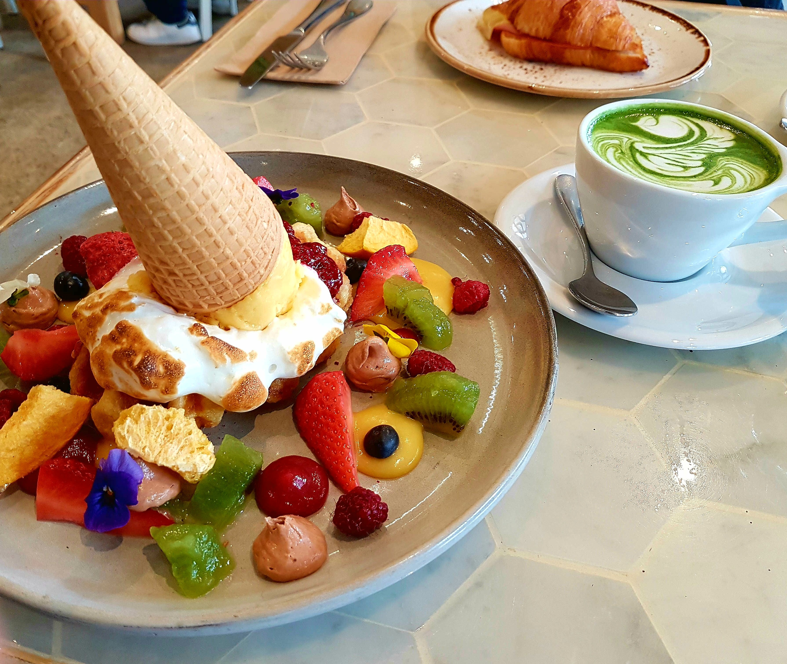

Welcome to
Secret Histories of Small Objects
Food Edition
Strawberry
Originally, this well known red fruit was not always red.
The very first strawberry is almost unrecognisable. After many years of selective breeding, the famous red strawberry we know today is bright red, large and plump with a subtle sweetness.
These traits were used in the selective breeding process, however the original fruit was actually sweeter. Farmers preferred a large, red, plump fruit over its taste.
Ice Cream Cloud
Ice Cream is a universally loved treat.
Different countries have different flavours. Taro is a popular flavour in Asia, which has been slowly brought into Australia.
With so many ice creameries in Australia, ice cream parlours have started getting creative with serving their ice cream. An ice cream parlour in Melbourne serves taro flavoured ice cream, topped with popping candy, surrounded by a light fluffy cloud of freshly spun fairy floss.
Pancakes are loved by many around the world.
Some have pancakes as a dessert, whilst some have it for breakfast.
The versatility of pancakes enables them to be used as both savoury and sweet dishes.
Popular ways to serve pancakes include with fruit, cream/ice cream and maple syrup.
Turn your pancakes into a savoury delight by adding pan fried bacon and eggs and maple syrup.
Pancakes
Coffee
Coffee is a necessacity for many to get through the morning.
Whether it is for that caffeine kick or its sweet aromatic flavour, it is enjoyed by many in the world.
There are many styles of coffee around the world; some prefer straight black coffee, whereas some will add cream, milk, milk variants such as soy and almond, as well as condensed milk.
So far, I've found Melbourne coffee to be the best out of several cities I've been to.
Desserts
Zumbo is a famous patissier and chef, pushing the limits on his desserts.
His lemon tarts are a delicious afternoon treat and the perfect way to take some time to yourself after a long day at work.
The tart lemon cuts through the sweetness of the meringue, balancing both flavours perfectly.
Croissant
This fluffy pastry is one of the very well known French foods.
Croissants can be toasted and filled with cheese, tomato and ham/bacon as a delicious breakfast.
The perfect crumbly fluffy croissant can be difficult to find in places outside of France, however Lune in Melbourne does a pretty good job.
Waffles

Waffles have tradditionally been square, with the most recognisable waffles being the Belgium waffles.
Cafes serving brunch have changed the way their serve their dishes due to social media influence. Presentation can make a big difference as many customers now will take pictures of their meals if presently beautifully, then post to social media, making presentation a free marketing tool for cafes.
Colours are as important as taste but the reward for excellent presentation is a great incentive for cafes.

Crabs
These crustaceans are a popular seafood delicacy for many around the world.
This little crab here was washed ashore on Cape Schanck's beach. Unfortunately it did not manage to make it back into the water and died under the harsh Australian summer sun.